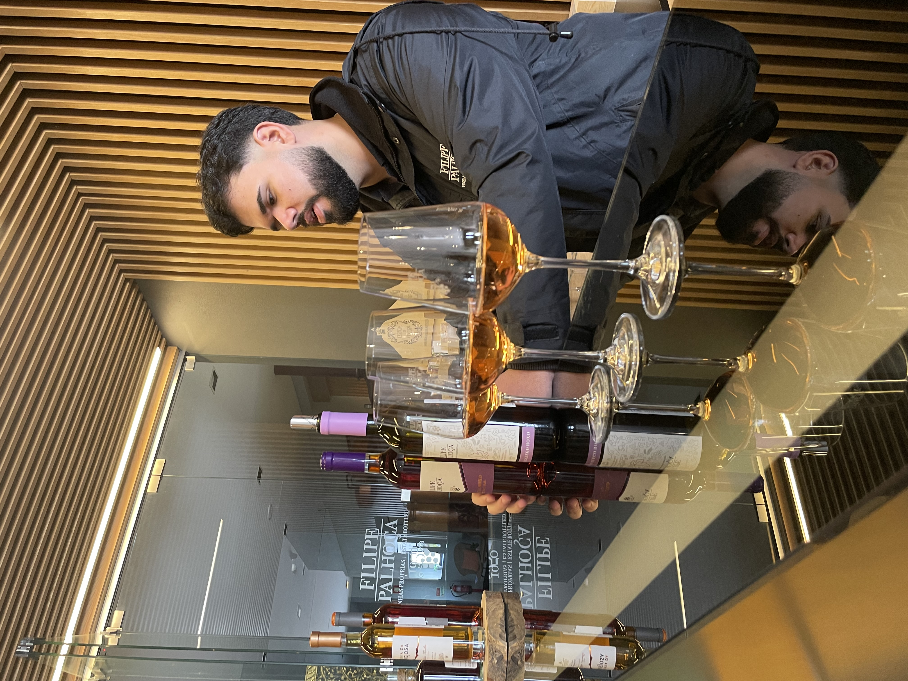
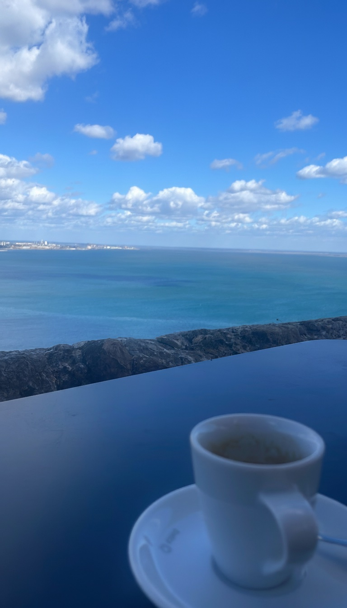
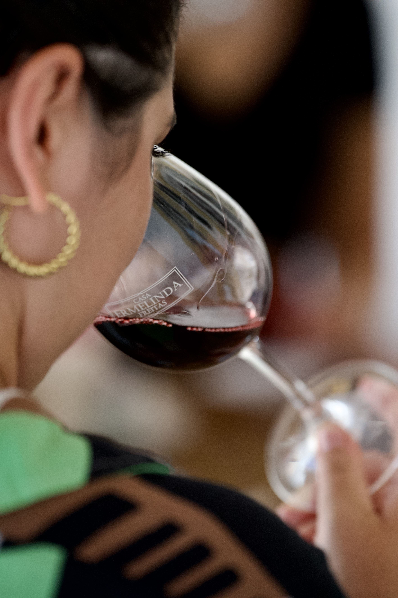
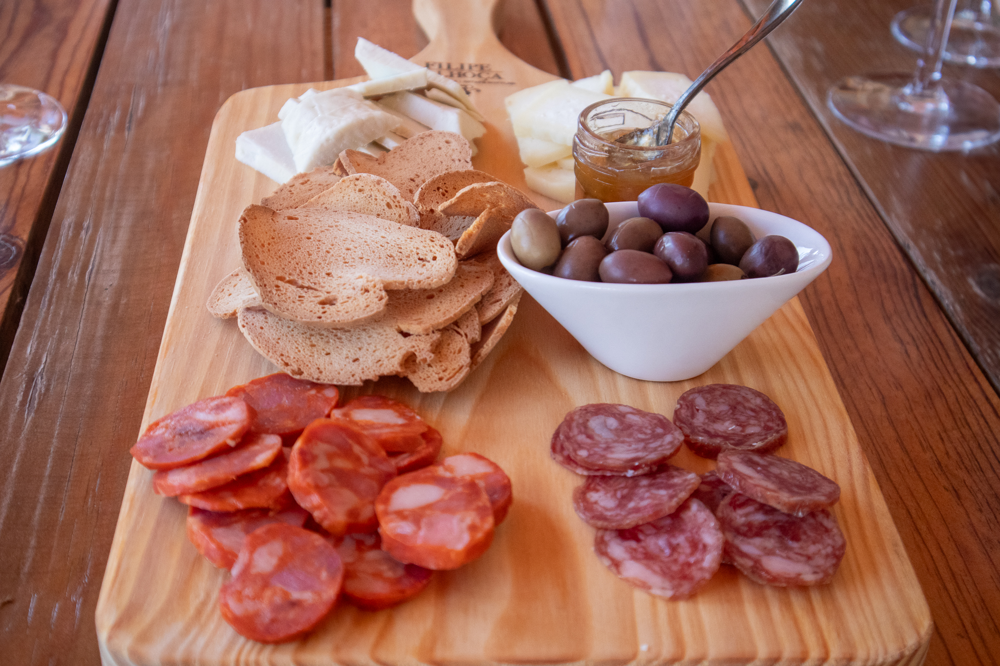
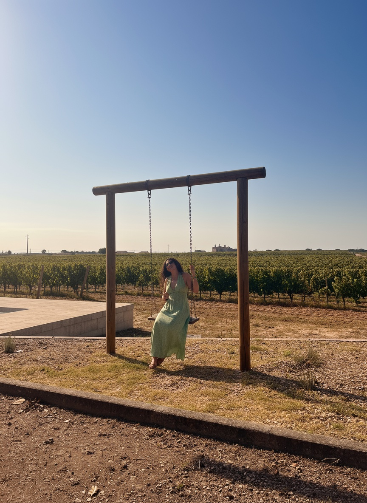
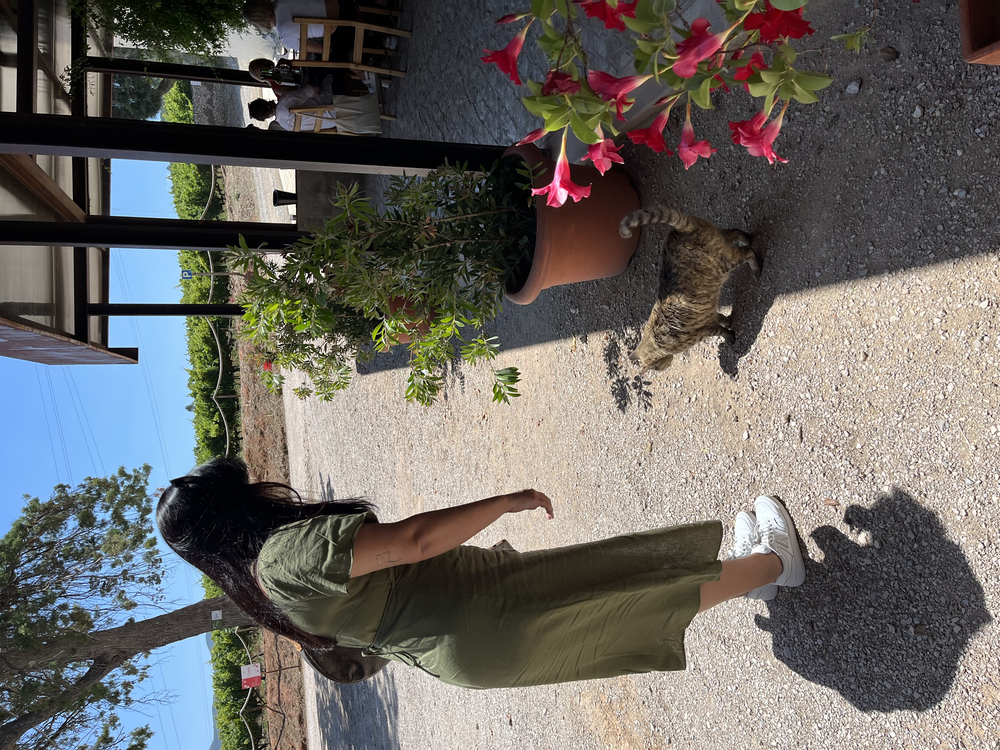
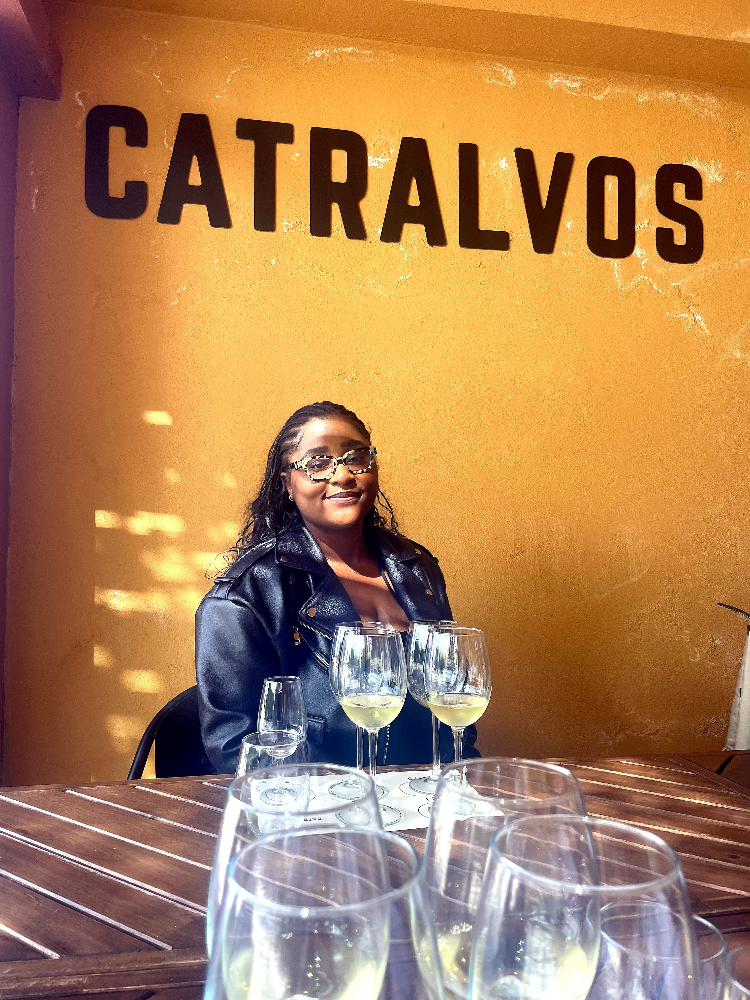

Setúbal Peninsula
Filipe Palhoça
A family-owned winery rooted in centuries of Moscatel tradition. Guided tastings led by the winemakers themselves, in a quiet space that lets the wines speak first.

Setúbal Peninsula · Half Day
A relaxed half-day in Portugal's most underrated wine region — family estates, the people who run them, and the wines Lisbon keeps to itself.
Duration
Half day
Group size
2–7 guests
Region
Setúbal Peninsula
From
€168 pp
Forty minutes from Lisbon, and a world away from it.
The Setúbal Peninsula is where Lisbon goes to drink well and slow down. Family estates, Moscatel poured straight from the cask, and winemakers who would rather talk than sell. Most visitors never make it here — which is rather the point.
This is an afternoon, not an itinerary. We collect you from the city, hand the day to the people who make the wine, and let it unfold: a guided visit, unhurried tastings, a long lunch, and time among the vines before the drive home.
What the day looks like
I
We collect you from central Lisbon and head south, across the bridge and into the Arrábida hills. By the time the city is behind you, the pace has already changed.
II
At the first estate you are met by the people who make the wine — a guided walk through the cellar, the casks and the story, told first-hand and in no particular hurry.

III
Then the wines themselves. Setúbal's Moscatel, its reds, its quiet surprises — poured and talked through by someone who knows exactly where each one came from.

IV
We break for a long lunch — regional cheeses, charcuterie and honest local cooking, matched to the wines and meant to be lingered over.

V
A second, more relaxed estate — the rustic kind, where tastings happen at the rhythm of the countryside and the wine comes with stories rather than a script.
VI
Before the day closes, time among the vines with a glass in hand — the Arrábida light, the coast in the distance, and no reason at all to rush.
What's included
Private transport
Door-to-door from central Lisbon and back — no driving, no logistics.
Estate visits
Family-owned estates most visitors never reach.
Wine tastings
Hosted tastings of Setúbal's Moscatel, reds and lesser-known wines.
Regional lunch
A long lunch of regional cheese, charcuterie and local cooking.
Your host
Hosted throughout by Nicola or a regional specialist.
Estate discounts
Discounts on any wines you would like to take home.
Featured Estate Partners

Setúbal Peninsula
A family-owned winery rooted in centuries of Moscatel tradition. Guided tastings led by the winemakers themselves, in a quiet space that lets the wines speak first.

Setúbal Peninsula
A rural estate where traditional Setúbal winemaking still feels close to the land. Stone, oak and unhurried tastings, shaped by the rhythm of the countryside.

Setúbal Peninsula
A boutique winery blending contemporary winemaking with thoughtful food pairings. Small in scale, generous in spirit, and open to guests who want to slow down.
Additional producer partners may be included depending on availability and seasonality.
★★★★★
"Just the most fun. Easy pickup in the centre of Lisbon, and they took us to the most amazing wine estates. We met one winemaker who talked to us for an hour about his process while touring the winery. Such a fun weekend adventure."
Alex Ge · Google review
Pricing
Price per person by group size
€250per person
€1,000 total · 4 guests
All-inclusive · transport, tastings, lunch and hosting · no booking fees
June rates · summer pricing from July
Good to know
More Classic experiences
Tell us your dates and group size — we'll take care of the rest. June rates hold until summer pricing begins in July.